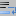

To enable line wrapping, select or press .
To enable a visual cue where a line is wrapped as opposed to be ended with a newline character, select . Display of where a line could wrap because its length exceeds some threshold can be enabled and configured in both Preferences and Styler Configurator. When choosing to just have a line break, you can control whether and where a wrap symbol is displayed.